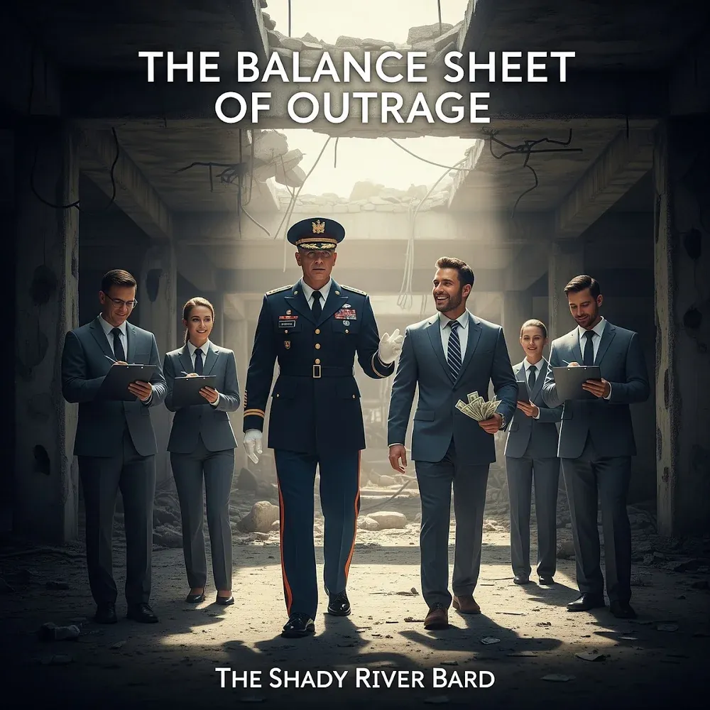

The Balance Sheet
of Outrage
A Forensic Sonic Audit of the Military-Industrial Complex & Manufactured Consent
"War is not a tragedy. It is a product. And like any product, it has a supply chain, a marketing department, and a quarterly earnings report written in blood and treasure. The Balance Sheet of Outrage is an unflinching sonic audit of this cynical machine."
Spanning four distinct narrative acts, The Balance Sheet of Outrage exposes the business model of modern conflict. From the boardroom handshake deals of "No Bid" to the manufactured echo chambers of "Embedded", the heartbreaking submunition tragedy of "Unexploded", and the crushing climax of "War, Inc.", the album challenges listeners to read the fine print where profit and loss are measured in human lives.
The Arc of The Balance Sheet
Follow the trajectory from the corporate boardroom proposal to the echo chamber of manufactured consent, the uncounted civilian externalities, and the righteous explosion of the final reckoning.
Pillars of the War Machine
Drawn directly from Table 0 of the master manuscript: the foundational economic, communicative, human, and ecological mechanisms that sustain perpetual armed conflict.
Complete Lyrics & Track Vault
Full unedited stanzas across all 14 tracks with permanent legal copyright notices and one-click clipboard copying.